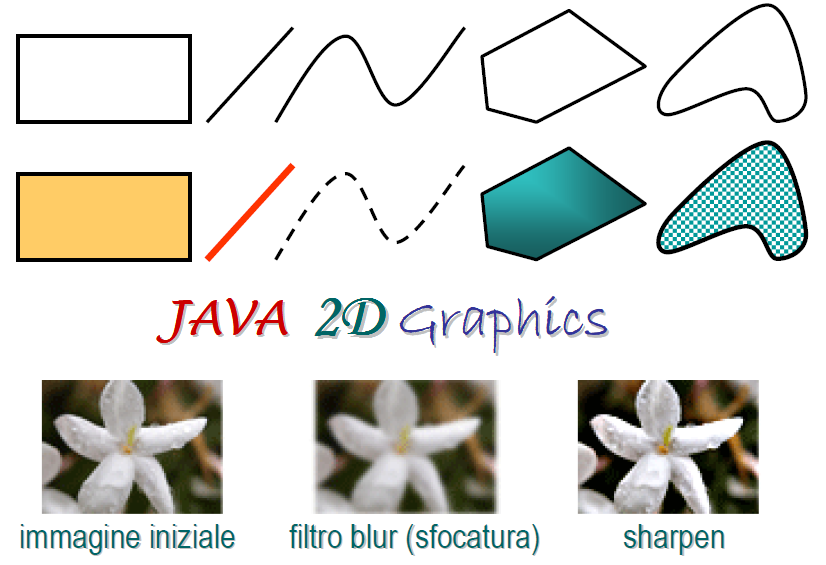
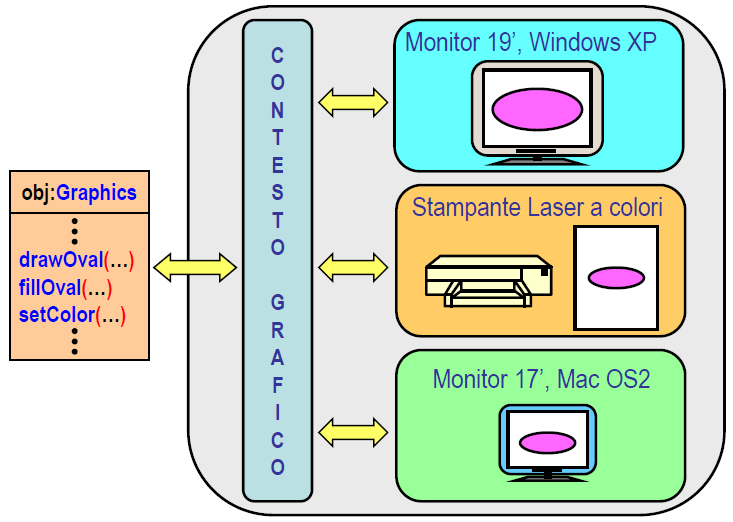
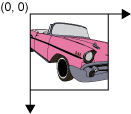

Java fornisce un importante supporto alla
grafica 2D
(e
3D
), in particolare mette a disposizione un insieme di classi, del package
java.awt
, che permettono di:

Fig 1: panoramica di alcune funzionalità offerte dalle 2D Graphics API di Java.
Con le
Java 2D Graphics API
(o
Java 2D API
) si intendono l’insieme delle classi del package
java.awt
(AWT AbstractWindow Toolkit) che compongono la libreria standard per la grafica 2D di Java. Alcuni importanti pacchetti di tali API sono riportati di seguito, per l’elenco completo si rimanda alla documentazione Java, in particolare al
Java Tutorial on 2D Graphics
.
java.awt
java.awt.
geom
java.awt.
font
java.awt.
color
java.awt.
image
java.awt.
print
Il processo di
rendering
di Java, cioè la riproduzione di una qualsiasi informazione grafica su un dispositivo di output (monitor, stampante) avviene utilizzando in modo opportuno un
contesto grafico
Java; ovvero un oggetto di tipo
java.awt.
Graphics
. Un contesto grafico Java schematizza un ambiente di visualizzazione
indipendente
dal
dispositivo di output
e dalla
piattaforma utilizzati
.
L’interazione con il contesto grafico, cioè con un oggetto di tipo
Graphics
, consiste nel descrivere, mediante una serie di primitive grafiche (di rendering), come “pitturare” (“paint”) l’area di disegno nel dispositivo di output.

Fig 2: schematizzazione del funzionamento del contesto grafico
java.awt.Graphics
.
Graphics
Un oggetto di tipo
Graphics
offre una serie di primitive grafiche (metodi pubblici) per riprodurre una qualsiasi informazione grafica sul dispositivo di output. Molte di queste primitive servono a visualizzare forme geometriche di vario tipo, pertanto deve essere specificata una descrizione geometrica di tali forme, rispetto ad un qualche riferimento cartesiano, che permetta di effettuarne il rendering sul dispositivo di output.
Per agevolare il compito del programmatore, evitando di fornire un codice diverso per ogni dispositivo di output, gli oggetti di tipo
Graphics
gestiscono due sistemi di coordinate, denominati
spazio utente
(
user space
) e
spazio di dispositivo
(
device space
).
Lo
spazio utente
stabilisce il sistema di coordinate a disposizione del
programmatore
ed è indipendente dalle caratteristiche dei dispositivi di uscita interessati dalle operazioni di rendering. Generalmente, un punto dello spazio utente è rappresentabile sia utilizzando delle coordinate intere (
int
) sia utilizzando delle coordinate frazionarie (
float
o
double
); si osservi però che quando si parla di coordinate non intere si sta implicitamente facendo riferimento al contesto grafico “avanzato”
Graphics2D
: una estensione di
Graphics
che ne potenzia le funzionalità. L’orientamento degli assi cartesiani è quello mostrato in figura.

Fig 3: sistema di coordinate cartesiane dello spazio utente.
Lo spazio di dispositivo definisce invece il sistema di coordinate del dispositivo di uscita: dipende strettamente dalle caratteristiche del dispositivo usato per le operazioni di rendering. Le coordinate dei punti dello spazio di dispositivo sono espresse in pixel, nel caso di monitor, e sono sempre definite mediante valori di tipo int. L’orientamento degli assi cartesiani è analogo a quello dello spazio utente; vedi Fig. 3. Il passaggio dalle coordinate nello spazio utente alle corrispondenti coordinate nello spazio del dispositivo viene svolto in modo autonomo e trasparente al programmatore; questo aspetto è proprio quello che agevola il compito di quest’ultimo.
Tabella 1. Principali primitive grafiche di
Graphics
.
| Modifier and Type | Method |
|---|---|
abstract void
|
drawArc
(int x, int y, int width, int height, int startAngle, int arcAngle)
|
abstract boolean
|
drawImage
(Image img, int x, int y, Color bgcolor, ImageObserver observer)
|
abstract void
|
drawLine
(int x1, int y1, int x2, int y2)
|
abstract void
|
drawOval
(int x, int y, int width, int height)
|
abstract void
|
drawPolygon
(int[] xPoints, int[] yPoints, int nPoints)
|
abstract void
|
drawPolyline
(int[] xPoints, int[] yPoints, int nPoints)
|
void
|
drawRect
(int x, int y, int width, int height)
|
abstract void
|
drawRoundRect
(int x, int y, int width, int height, int arcWidth, int arcHeight)
|
abstract void
|
drawString
(String str, int x, int y)
|
abstract void
|
fillArc
(int x, int y, int width, int height, int startAngle, int arcAngle)
|
abstract void
|
fillOval
(int x, int y, int width, int height)
|
abstract void
|
fillPolygon
(int[] xPoints, int[] yPoints, int nPoints)
|
abstract void
|
fillRect
(int x, int y, int width, int height)
|
abstract void
|
fillRoundRect
(int x, int y, int width, int height, int arcWidth, int arcHeight)
|
abstract Color
|
getColor
()
|
abstract Font
|
getFont
()
|
abstract void
|
setColor
(Color c)
|
abstract void
|
setFont
(Font font)
|
Un oggetto di tipo
Graphics
può essere utilizzato per effettuare il rendering di una qualsiasi informazione grafica all’interno di una componente awt/swing. Siccome la classe
Graphics
è astratta non è possibile ottenere un oggetto di tipo Graphics direttamente con l’operatore
new
. La domanda che si pone è pertanto la seguente:
come è possibile ottenere un’istanza di una classe concreta che estende
Graphics
?
Per dare una risposta convincente è necessario illustrare la “filosofia” alla base del
processo di renderin
g di una GUI awt/swing.
Il processo di rendering di una GUI viene gestito dall’
AWT Painting System
(
AWT-PS
) e viene reso ancora più efficiente dallo
Swing Repaint Manager
(
SRM
). L’AWT-PS/SRM, dal nostro punto di vista, rappresenta il programma che coordina il rendering di un’interfaccia grafica. Ogni qual volta è necessario effettuare il rendering della GUI (
JFrame
) o di una sua “porzione” (ad esempio un
JPanel
), l’AWT-PS/SRM chiede alla GUI o a quella sua “porzione” di “dipingersi”, per fare questo invoca il metodo
paint()
passando in argomento a tale metodo un oggetto concreto di tipo
Graphics
, cioè il contesto grafico. In altri termini, il processo di rendering delega alle singole componenti awt/swing il compito di dipingersi invocando su di loro il metodo:
public void paint(Graphics g)
Si noti che il metodo
paint()
viene definito nella super-classe
javax.swing.
JComponent
quindi è implicitamente ereditato da tutte le componenti swing. Nel caso del
JFrame
viene invece ereditato dalla sua super-classe
java.awt.
Window
.
IMPORTANTE
L’invocazione di
paint()
avviene spesso in modo trasparente al programmatore, in particolare tale metodo viene sempre invocato in modo automatico ogni qual volta è necessario “ridipingere” la GUI (o una sua porzione). Ad esempio, se un qualche evento comporta che il testo di un componente
JLabel
debba essere modificato, allora in modo trasparente al programmatore l’AWT-PS/SRM chiede al quel componente
JLabel
di ridipingersi invocando su di lui il metodo
paint()
. Il programmatore non deve pertanto farsi carico di gestire il “repaint” di quel componente. Un altro esempio è quando la GUI deve essere visualizzata per la prima volta o quando si passa dallo stato “iconizzato” allo stato “deiconizzato”.
Tuttavia, possono esservi delle situazioni in cui è necessario consentire al programmatore di richiedere un “repaint” della GUI o di un suo componente, a tale scopo è dedicato appunto il metodo
repaint()
. Si noti che, il metodo
repaint()
non richiede che gli sia passato in argomento un contesto grafico, in quanto serve soltanto a sollecitare l’AWT-PS/SRM ad invocare il metodo
paint()
su quel componente. La tempistica con la quale sarà effettivamente ridipinto il componente in questione è soltanto parzialmente influenzabile dal programmatore. Infine, per ovvie ragioni di efficienza, il programmatore può richiedere di ridipingere una porzione ridotta di un dato componente. Per ulteriori dettagli si consulti la documentazione Java.
IMPORTANTE
Il processo di rendering appena descritto e che sarà illustrato nel seguito, viene definito
rendering passivo
(
passive rendering
), nel senso che il programmatore può soltanto influenzare la sua evoluzione, ma non ha un totale controllo sul
quando
una data operazione debbe essere effettuata. In alcune situazioni, il rendering passivo può non essere sufficientemente “rapido” da garantire un’efficace esecuzione di talune applicazioni grafiche, quali ad esempio i video-game, in questi casi conviene utilizzare un approccio basato sul
rendering attivo
(
active rendering
). Una trattazione dettagliata sul rendering attivo esula dagli scopo di questo corso, per il lettore interessato si rimanda alla seguente documentazione Java
Full-Screen Exclusive Mode API
.
Ritornando pertanto alla domanda iniziale: come è possibile ottenere un’istanza di una classe concreta che estende
Graphics
?
La risposta risulta a questo punto abbastanza semplice alla luce di quanto detto. In particolare, siccome l’obiettivo è quello di dipingere una data informazione grafica all’interno di una GUI, ci si deve limitare ad estendere in modo opportuno il metodo
paint()
del componente della GUI su cui si desidera dipingere.
Domanda
Fornire lo scheletro di una classe
DrawingWindow
che illustri come sia possibile disegnare una qualsiasi informazione grafica all’interno del content pane di un
JFrame
.
Risposta
Di seguito viene riportata una possibile implementazione dello scheletro di
DrawingWindow
; si osservi che sebbene sia possibile disegnare all’interno di un
JFrame
, la documentazione Java lo sconsiglia, suggerendo invece di utilizzare un componente
JPanel
quale area di disegno.
import java.awt.Dimension;
import java.awt.Graphics;
import javax.swing.JFrame;
public class DrawingWindow extends JFrame {
public DrawingWindow() {
super("DrawingWindow");
setDefaultCloseOperation(JFrame.EXIT_ON_CLOSE);
setPreferredSize(new Dimension(800, 600));
pack();
}
@Override
public void paint(Graphics g) {
super.paint(g);
// add below the code for drawing a house
//...
}
public static void main(String[] args) {
javax.swing.SwingUtilities.invokeLater(new Runnable() {
public void run() {
new DrawingWindow().setVisible(true);
}
});
}
} // end class